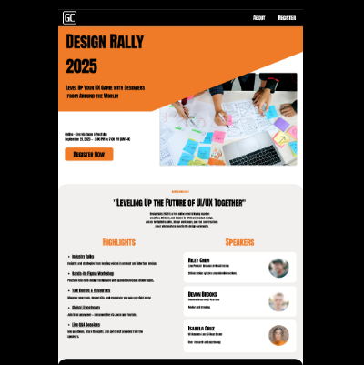
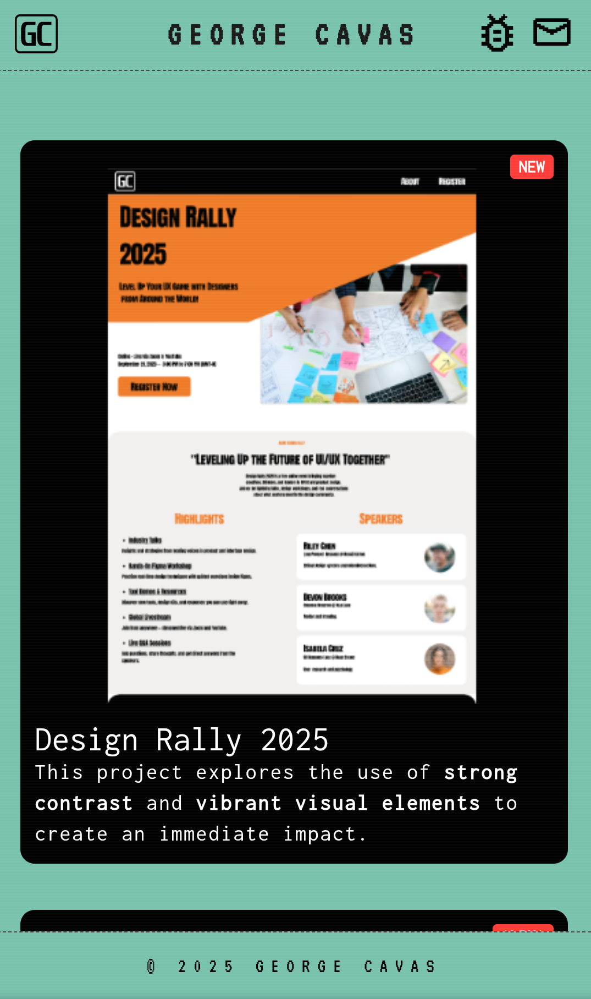
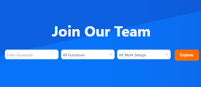
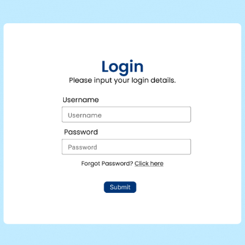

NEW

Design Rally 2025
This project explores the use of strong contrast and vibrant visual elements to create an immediate impact.
BETA

Personal Portfolio Website
A custom UI/UX portfolio built using HTML, CSS, and JavaScript. Interactive, mobile-friendly, and content-focused.
ALPHA

Website Revamped
Developed custom WordPress plugins using PHP and HTML/CSS based on team needs for smooth integration.
v1.0

Coffee Ordering UI
Minimalistic mobile ordering flow focused on UI clarity and user interaction.
v1.0

Quick Access Website UI
Designed a interface for quick access to insurance features. Focused on layout hierarchy, and ease of navigation.